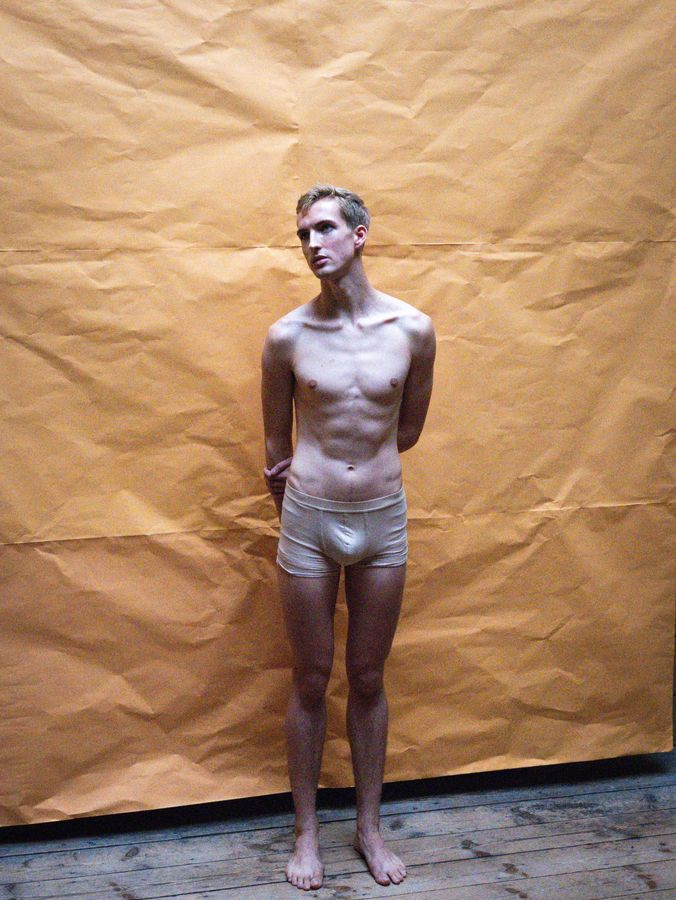
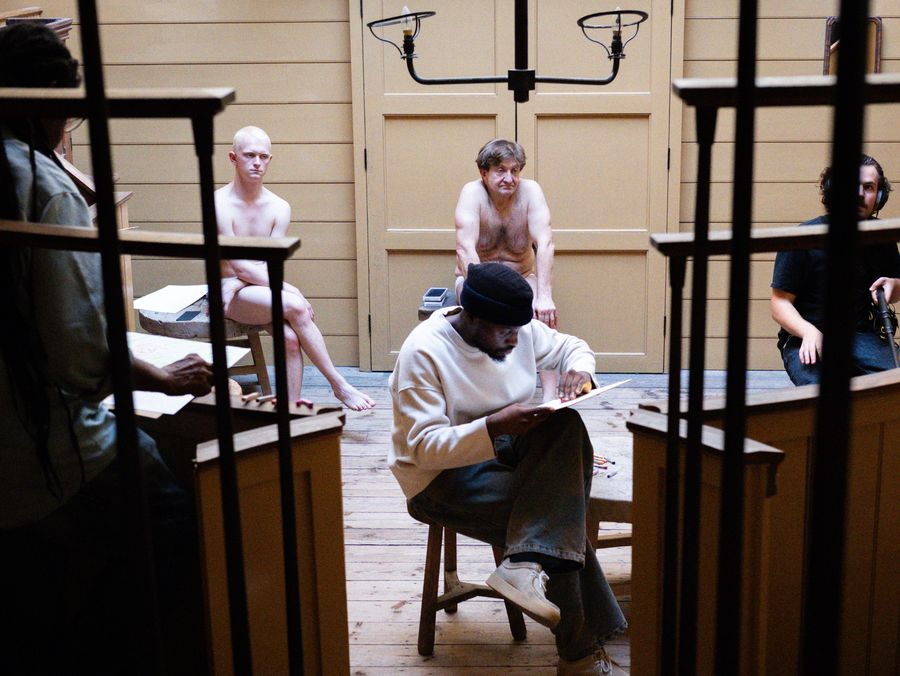
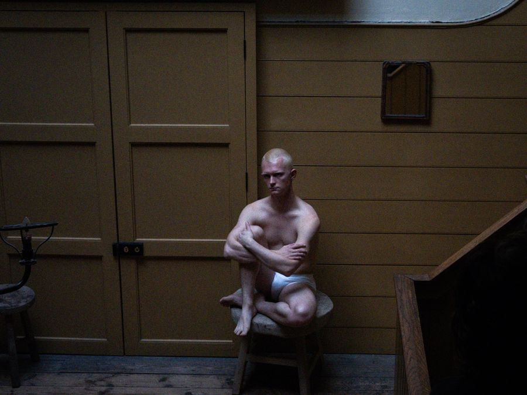
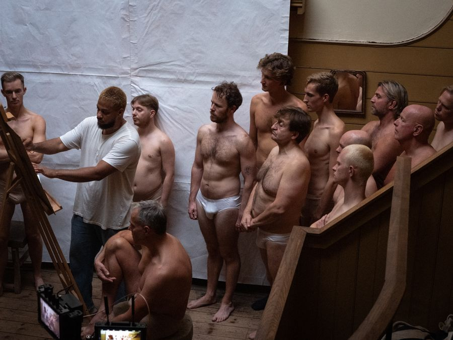
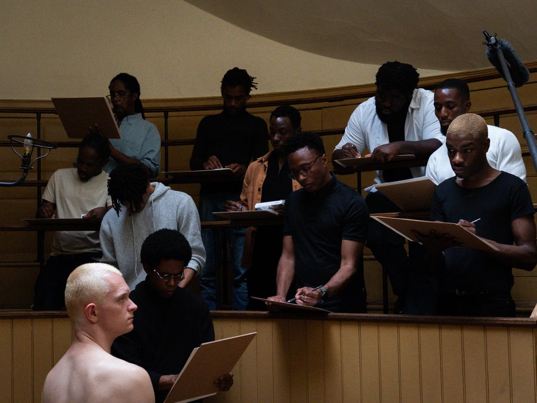

a figuração branca é um novo gênero da pintura inventado em 2020 com a série Clube, na favela da Rocinha, no Rio de Janeiro, Brasil. white figuration is a new genre of painting invented in 2020 with the Clube series, in the Rocinha favela, in Rio de Janeiro, Brazil.






a figuração branca
é uma invenção brasileira.
white figuration
is a Brazilian invention.


a figuração branca é
um novo gênero da pintura
inventado em 2020 com
a série Clube,
na favela da Rocinha,
no Rio de Janeiro, Brasil.
toda inventividade que a série Clube propõe, não está baseada somente em um ponto, é uma soma de intenção, com análise histórica e consciência do próprio tempo e suas implicações.
o que nomeei “figuração
branca” é o que hoje
vocês chamam apenas
de figuração.
white figuration is a
new genre of painting
invented in 2020 with the
Clube series, in the Rocinha
favela, in Rio de Janeiro, Brazil.
the inventiveness of
the Clube series does not
rest on a single point, but
on a combination of intention,
historical analysis, and an
awareness of its own time and
its implications.
what I have named “white
figuration” is what you now
call simply figuration.

“pintor preto, figuração branca” gera um contraste explícito que faz nascer, na pintura, a raça da figura branca. somente um autor racializado tem o poder de conferir raça. pintor preto, figuração branca é uma afirmação que nos ajuda a revelar uma posição. não é mais o pintor branco tradicional pintando o corpo branco, seus pares, amigos, familiares, grupo social, etc. agora é o pintor… acesse os prints disponíveis prints available here